宿の持ち物をそろえる（旅行の犬用品）→ 出発地からの旅行プランを立てる → 旅の服（雨・朝晩の冷え・宿のマナー）→
広告 予約・購入のリンクを利用すると、運営者に紹介料が入る場合があります(バリューコマースの LinkSwitch により、提携先へのリンクが広告リンクとして扱われることがあります)。掲載順や比較内容は報酬の有無で変えていません。
← わんことのじかんへ戻る 東日本の犬とお出かけ先を見る →掲載981宿 公式・正規運営情報を基に整理し、客室やプランで変わる条件は「予約前確認」としています。
このページには、各県から 2 軒ずつ(施設に直接確認した回答・写真・クチコミのある宿を優先)、計 28 軒を載せています。すぐ下の検索欄と条件はこの 28 軒が対象です。すべての宿は県のページか 全件のページ で探せます。
寝る場所犬用ベッド、クレート、床置きマットのどれか
ケージ常設、貸出予約、持参必須を区別
添い寝人用ベッド可否と条件を確認
アメニティトイレ・食器・清掃・足洗いまで確認
東京都渋谷区
セルリアンタワー東急ホテル ドッグフレンドリーステイ
 画像提供：楽天トラベル
画像提供：楽天トラベルチェックイン 15:00〜25:00 ／ チェックアウト 12:00 (楽天トラベル掲載情報・2026-10-01 時点。プランにより異なる場合があります)
楽天トラベルのクチコミ評価★★★★☆4.64/ 5 ・ 1,906件
部屋 4.54・清潔感 4.64・サービス 4.71・風呂 4.64
最新のクチコミを読む(楽天トラベル・2026-09-27 投稿)
スタッフの心温まるおもてなしと絶品朝食スタッフの皆さんのホスピタリティの高さに脱帽です。外国の方の利用も多い中で、日本人であることが誇らしいほどに、「おもてなし」を感じました。また、朝食も多国籍?…
楽天トラベルに投稿された最新の 1 件を、そのまま表示しています(犬連れの方の投稿とは限りません)。
広告｜楽天トラベルでクチコミを読む 楽天トラベル API で取得(2026-11-04)。犬連れ以外の宿泊者も含む評価です。
所在地 東京都渋谷区桜丘町26-1 · 公式情報
対象犬・頭数公式同意書では7kg未満・1室1頭。登録、狂犬病・混合ワクチン証明などの条件あり。
ケージはある？館内共用部ではキャリーバッグ移動。客室内ケージ・寝具の最新仕様は予約前確認。
夜はどこで寝る？犬と同じ客室で滞在できますが、人用ベッド利用可否は予約前確認。
持ち込み判断規定サイズのキャリーバッグ、証明書、慣れた寝具・フードを持参候補に。
食事・一緒に過ごせる範囲犬は指定客室内のみ。駐車場・ロビー・廊下の通行は全身が入るキャリーで可。館内レストラン等は同伴不可、客室浴室で犬洗いも不可。食事・留守番方法を事前に決める。
予約前の重要確認最新の体重条件を予約時確認。狂犬病・3種以上混合ワクチンは接種後2週間以上1年未満が条件。犬だけを客室に残す外出は不可、必要時はペットシッターを手配。
公式情報で確認できた設備・特徴CHECK
- ドッグフレンドリー客室
- キャリーバッグ移動
- 都心アクセス
- ルームサービス確認候補
販売状況の注意：公式の紹介記事に記載されたプラン期間は「2022年3月31日まで」で、現行の宿泊プラン一覧にドッグフレンドリーのプランは見当たりません（2026-10-03確認）。販売終了とは断定できないため、予約前に公式サイトで現在の受付状況を確認してください。
ワクチン・狂犬病の証明書の提示・持参あり 主要駅から車で(目安・渋滞なし): 新宿駅 約7分・4.5km、東京駅 約8分・7.7km、横浜駅 約31分・28.4km
広告｜楽天トラベルで空室・条件を確認この宿への旅行プラン →
公式情報確認日：2026-10-07
ここへのわんこ旅行プラン
東京都青梅市
奥多摩 清流リゾート 亀の井ホテル 青梅 ドッグフレンドリールーム
 画像提供：楽天トラベル
画像提供：楽天トラベルチェックイン 15:00〜20:00 ／ チェックアウト 10:00 (楽天トラベル掲載情報・2026-10-01 時点。プランにより異なる場合があります)
楽天トラベルのクチコミ評価★★★★☆4.21/ 5 ・ 1,056件
部屋 4.34・清潔感 4.34・サービス 4.30・風呂 4.16
最新のクチコミを読む(楽天トラベル・2026-10-30 投稿)
優しい味の会席と落ち着いた雰囲気の宿土地の恵み会席は高齢の両親が大喜びでした。野菜豊富で優しい味付けで全てが美味しいと2人とも完食でした。全体的に年齢が高い方の利用が多く落ち着いた雰囲気でスタ…
楽天トラベルに投稿された最新の 1 件を、そのまま表示しています(犬連れの方の投稿とは限りません)。
広告｜楽天トラベルでクチコミを読む 楽天トラベル API で取得(2026-11-04)。犬連れ以外の宿泊者も含む評価です。
多摩川沿いの清流リゾートのホテル。犬と泊まれる部屋には専用の出入口と足洗い場があり、プライベートドッグラン付きのスイートやドライサウナ付きの部屋もある。部屋食で犬と一緒に食事できるプランの案内。
対象犬・頭数犬と泊まれるのはドッグフレンドリールーム(4種類)。原則15kgまでの小・中型犬2頭まで。1階ドッグラン付き客室は大型犬1頭も可。常時室内飼育で1歳以上。
夜はどこで寝る？ドッグフレンドリールーム(スーペリア40㎡、ドライサウナ付きプレミアム57㎡、プライベートドッグラン付きスイート60・63㎡。いずれも4名まで)。「お客様用布団またはベッドに入れず、ケージで寝かせてください」（規約）。ホテル外へは犬を連れて出る（部屋に残さない）。
食事同伴食事会場は犬の入場不可。部屋食のプランあり。犬のごはんは持参
ドッグランスイート2タイプはプライベートドッグラン付き
予約前の重要確認混合ワクチン(3種以上)は1年以内の接種証明を提示。狂犬病は未接種・接種後14日以内・1年以上経過は不可。ヒート中と終了後2週間以内、妊娠中は不可。犬の料金はプランで予約前に確認。
犬用備品・設備CHECK
- ケージ、犬用ソファ、フードボウル、トイレシート、トイレバケツ、消臭剤、粘着クリーナー、散歩用トートバッグ、消臭袋
客室差：4タイプ(上記)。
ワクチン・狂犬病の証明書の提示・持参あり 主要駅から車で(目安・渋滞なし): 立川駅 約36分・23.7km、大宮駅 約1時間00分・45.9km、新宿駅 約1時間03分・57.2km
広告｜楽天トラベルで空室・条件を確認この宿への旅行プラン →
公式情報確認日：2026-10-03。料金・犬の条件・客室差は予約前に再確認。人用の寝具を犬が使えるかは、確認できていない場合は予約前確認としています。
ここへのわんこ旅行プラン
 画像提供：楽天トラベル
画像提供：楽天トラベルチェックイン 15:00〜18:00 ／ チェックアウト 11:00 (楽天トラベル掲載情報・2026-10-01 時点。プランにより異なる場合があります)
楽天トラベルのクチコミ評価★★★★☆4.65/ 5 ・ 174件
部屋 4.75・清潔感 4.67・サービス 4.78・風呂 4.66
最新のクチコミを読む(楽天トラベル・2026-10-28 投稿)
スタッフの親切な対応と清潔な部屋で快適スタッフのみなさんが親切でしたお部屋も清潔で気持ちよく過ごせました。クチコミの詳細はこちらから https://review.travel.rakut…
楽天トラベルに投稿された最新の 1 件を、そのまま表示しています(犬連れの方の投稿とは限りません)。
広告｜楽天トラベルでクチコミを読む 楽天トラベル API で取得(2026-11-04)。犬連れ以外の宿泊者も含む評価です。
所在地 〒250-0631 神奈川県足柄下郡箱根町仙石原817-360 · 公式情報
カーナビは住所で検索し、公式アクセス案内でホテル周辺からの道順をご確認ください。電話番号検索は別の場所を案内する場合があります。
対象犬・頭数犬種・大きさの一律制限なし。小型・中型6頭／室、大型3頭／室まで、一部客室は例外。大型犬用クレート・トイレ・食器に対応。
ケージはある？クレートとマットレスを客室に用意。頭数分が必要な場合は事前連絡。
夜はどこで寝る？就寝時はクレート、人用ベッドは犬不可。ソファ・椅子に乗せる際は備え付けバスタオルを敷く。
持ち込み判断慣れた寝具は持参候補。周辺は坂道が多いため、歩行が苦手な犬は館内ドッグラン中心で計画。
食事・一緒に過ごせる範囲夕食・朝食とも客室ダイニングで犬と一緒に（犬は床または無料貸出カート、イス・テーブルには乗せない）。犬用食事あり。犬の預かりサービスはありません。
予約前の重要確認直接予約は2頭無料、3頭目から1頭1泊2,200円、他社予約は各頭1泊3,300円（税込）。周辺散歩は勾配あり、シニア犬等は移動距離と館内設備を確認。
公式情報で確認できた設備・特徴CHECK
- クレート・マットレス
- 食器2個
- トイレ・シート
- エチケット袋
- 犬用バスタオル
- 足拭きフォーム
- 消臭除菌スプレー
- おやつ
頭数・犬料金：小型〜中型犬6頭／室、大型犬3頭／室（一部客室タイプを除く）。公式サイト・電話予約は2頭まで無料、3頭目以降1頭あたり2,200円（税込）。その他の予約サイト経由は1頭あたり3,300円（税込）。
ドッグラン：屋内80㎡、屋外約80㎡（全犬種）。専用庭付き客室あり。公式確認：2026-10-03
主要駅から車で(目安・渋滞なし): 静岡駅 約1時間16分・82.3km、甲府駅 約1時間25分・86.3km、横浜駅 約1時間31分・94.3km
広告｜楽天トラベルで空室・条件を確認この宿への旅行プラン →
公式情報確認日：2026-10-07
ここへのわんこ旅行プラン
神奈川県箱根町
Rakuten STAY 箱根すすき草原
 画像提供：楽天トラベル
画像提供：楽天トラベルチェックイン 15:00〜22:00 ／ チェックアウト 10:00 (楽天トラベル掲載情報・2026-10-01 時点。プランにより異なる場合があります)
楽天トラベルのクチコミ評価★★★★☆4.13/ 5 ・ 235件
部屋 4.40・清潔感 4.30・サービス 4.02・風呂 4.10
最新のクチコミを読む(楽天トラベル・2026-10-23 投稿)
犬用グッズと充実した設備で快適な滞在柴犬を連れて初利用でした。部屋に備えられた犬グッズが充実していて重宝しました。キッチン・食器が充実しており、食洗機や洗濯乾燥機も室内設備として揃って…
楽天トラベルに投稿された最新の 1 件を、そのまま表示しています(犬連れの方の投稿とは限りません)。
広告｜楽天トラベルでクチコミを読む 楽天トラベル API で取得(2026-11-04)。犬連れ以外の宿泊者も含む評価です。
所在地 神奈川県足柄下郡箱根町仙石原字六郎兵衛1246-80 · 公式情報
対象犬・頭数ペット対応客室で小・中・大型犬を合計2頭まで。
ケージはある？ドッグフレンドリールームにケージ、犬用クッションベッド、フードボウル、リードフック（玄関・テラス）等を用意。留守番条件は予約客室で確認。
夜はどこで寝る？同室滞在。人用ベッド・布団・ソファ・浴槽は犬利用不可。
持ち込み判断普段の寝具・フード、散歩用品を持参候補に。狂犬病・混合ワクチン接種済みが条件。証明書提出は不要、ヒート中は不可。
食事・一緒に過ごせる範囲ペット対応客室に専用庭と足洗い水栓あり。仙石原散歩の拠点。
予約前の重要確認専用庭をドッグランとして使えるか、柵と地面、利用時間を客室詳細で確認。
公式情報で確認できた設備・特徴CHECK
- 客室専用庭
- ペット対応客室
- 仙石原観光拠点
- キッチン確認候補
- 駐車場確認
Rakuten STAY 共通案内：公式ペット特集のサイズ区分は小型犬10kg未満・中型犬25kg未満・大型犬40kg未満で、小・中・大型犬合計2頭まで。フード・おやつ・タオルなど必要な物は持参。犬料金の有無と人用寝具の扱いは共通FAQ・予約画面で確認してください。公式確認：2026-10-03
ワクチン接種済みが条件 主要駅から車で(目安・渋滞なし): 静岡駅 約1時間13分・80.8km、甲府駅 約1時間29分・102.7km、横浜駅 約1時間32分・95.1km
広告｜楽天トラベルで空室・条件を確認この宿への旅行プラン →
公式情報確認日：2026-10-07
ここへのわんこ旅行プラン
 画像提供：楽天トラベル
画像提供：楽天トラベルチェックイン 15:00〜22:00 ／ チェックアウト 11:00 (楽天トラベル掲載情報・2026-10-01 時点。プランにより異なる場合があります)
楽天トラベルのクチコミ評価★★★★☆4.38/ 5 ・ 902件
部屋 4.32・清潔感 4.25・サービス 4.32・風呂 4.18
最新のクチコミを読む(楽天トラベル・2026-10-28 投稿)
ドッグランが充実、愛犬と大満足のひとときドッグランが充実しており犬の為のホテルでした。とても満足です。またお伺いしたいと思います。クチコミの詳細はこちらから https://review.tr…
楽天トラベルに投稿された最新の 1 件を、そのまま表示しています(犬連れの方の投稿とは限りません)。
広告｜楽天トラベルでクチコミを読む 楽天トラベル API で取得(2026-11-04)。犬連れ以外の宿泊者も含む評価です。
夜はどこで寝る？使い慣れた寝具の持参を推奨。客室タイプにより犬用ベッド・ドッグサークルの備えが異なります。
ケージはある？ケージ貸出あり（先着順・要予約）。客室タイプによってドッグサークル常設あり。
持ち込み判断貸出未確保時や慣れたクレートが必要なら持参。1年以内の狂犬病・5種以上混合ワクチン証明をチェックイン時に確認。ランにも両接種必須。犬だけを残す施設外への外出時はクレート・ケージか有料預かりを利用。
添い寝の条件寝具汚損時の案内はありますが、人用ベッドでの添い寝可否を一律に確認できないため、選ぶ客室タイプごとに確認してください。
犬用アメニティ充実度●●●●○
- トイレシーツ
- トイレトレイ
- プープバッグ
- 食器
- 犬用タオル
- 粘着クリーナー
- 消臭剤
- ランタン
客室差：グランピング・ヴィラ等は犬用ベッドあり。ドギーズサウスの一部客室はドッグサークルあり。本館などはケージ貸出を要予約。
予約前チェック：本館のケージ貸出は先着順・要予約。普段のフードと寝具を持参してください。添い寝は選ぶ客室で確認を。公式再確認：2026-09-22
犬料金（2026-10-01宿泊分から改定）：1頭目は無料、2頭目以降は1頭あたり3,300円（税込）。泊単位・予約経路による違いは予約画面で確認してください。ドッグランは総面積約13,000㎡の天然芝で、小型犬専用・中〜大型犬専用・全犬種用・貸切用に区分。公式確認：2026-10-03
ワクチン接種済みが条件 主要駅から車で(目安・渋滞なし): 千葉駅 約18分・16.8km、東京駅 約59分・53.8km、新宿駅 約1時間05分・60.5km
広告｜楽天トラベルで空室・条件を確認この宿への旅行プラン →
ここへのわんこ旅行プラン
 画像提供：楽天トラベル
画像提供：楽天トラベルチェックイン 15:00〜18:00 ／ チェックアウト 11:00 (楽天トラベル掲載情報・2026-10-01 時点。プランにより異なる場合があります)
楽天トラベルのクチコミ評価★★★★☆4.67/ 5 ・ 243件
部屋 4.76・清潔感 4.73・サービス 4.72・風呂 4.46
最新のクチコミを読む(楽天トラベル・2026-10-28 投稿)
愛犬と浜辺を散歩し、食事も一緒に満喫浜辺を犬と散歩できてとてもよかったです。夕食、朝食ともに充実しておりとても美味しかったです。犬の同席もできて満足です。他の画像やクチコミの詳細はこちらから …
楽天トラベルに投稿された最新の 1 件を、そのまま表示しています(犬連れの方の投稿とは限りません)。
広告｜楽天トラベルでクチコミを読む 楽天トラベル API で取得(2026-11-04)。犬連れ以外の宿泊者も含む評価です。
夜はどこで寝る？就寝時は客室備え付けのクレートを使用。
ケージはある？クレート（ケージ）あり、大型犬用も用意。就寝時と犬だけの留守番時は使用必須。頭数に応じた追加は事前連絡。
持ち込み判断基本は備え付けを利用。持込クレートの可否・設置寸法は事前確認。1年以内の狂犬病・5種以上混合ワクチン（抗体検査可）が条件。接種困難時は1年以内発行の猶予証明書。
添い寝の条件人用ベッドに犬を乗せず、就寝時はクレートを使用。ソファ・椅子に乗せる際は備え付けバスタオルを敷く。
ドッグラン敷地内に全犬種用の人工芝ドッグラン（50㎡）があります。
犬用アメニティ充実度●●●●●
- クレート
- マットレス
- 食器
- おやつ
- ウェットティッシュ
- 消臭除菌防虫スプレー
- 粘着ローラー
- 足拭きフォーム
- 足拭きタオル
- 犬用バスタオル
- トイレ
- トイレシート
- 散歩用エチケット袋
客室差：大型犬は大型犬用クレート・トイレ・食器を用意。頭数により備品数が変わります。
犬料金・予約経路：公式サイト・電話の直接予約では、犬の大きさにかかわらず2頭まで無料、3頭目以降は1泊1頭2,200円（税込）。他の予約サイト経由は全犬種1頭あたり3,300円（税込）で、この特典は適用されません。犬料金を含む総額を各プランで確認してください。
対象犬・頭数：1室あたり小型〜中型犬6頭、大型犬3頭まで（一部客室タイプを除く）。公式では大型犬の区分を「体高（背中の高さ）50cm」と案内しています。サイズ区分、大小混在時の頭数、客室別の上限と追加備品は予約前に確認してください。
食事：夕食・朝食とも犬同伴可能なレストランで提供。部屋食の対応はありません。公式再確認：2026-10-03
ワクチン接種済みが条件 主要駅から車で(目安・渋滞なし): 千葉駅 約1時間06分・74.7km、東京駅 約1時間26分・94.5km、新宿駅 約1時間27分・98.2km
広告｜楽天トラベルで空室・条件を確認この宿への旅行プラン →
ここへのわんこ旅行プラン
埼玉県羽生市
レクトーレ 羽生TERRACE(愛犬と泊まれるVILLA)
 画像提供：楽天トラベル
画像提供：楽天トラベル楽天トラベルのクチコミ評価★★★★☆4.31/ 5 ・ 118件
部屋 4.15・清潔感 4.39・サービス 4.39・風呂 3.90
最新のクチコミを読む(楽天トラベル・2026-10-28 投稿)
ペット臭がなく清潔、イオンも近くて便利愛犬と2連泊しました。ペット可の部屋なのにペット臭も無いし掃除も行き届いていました。すぐ側に大きなイオンが有り食事も買い物も困りません!また宿…
楽天トラベルに投稿された最新の 1 件を、そのまま表示しています(犬連れの方の投稿とは限りません)。
広告｜楽天トラベルでクチコミを読む 楽天トラベル API で取得(2026-11-04)。犬連れ以外の宿泊者も含む評価です。
買い物のついでにも立ち寄れる『遊ぶ・くつろぐ・泊まる』施設。客室にケージ(975×665×710mm)・トイレシート・マナーボトル・ゴミ箱・食器・粘着テープ・足ふきタオルを用意し、ドッグランも。犬用ケーキ(3号4,620円)、さつまいもモンブラン、犬用朝食『WANKO BENTOU』(1,980円、7日前までに予約)。併設テラスでBBQ。犬のしつけ体験教室などのイベントも。
対象犬・頭数室内飼いの10kg未満・生後4か月以上の犬。基本的なしつけ済みで闘犬不可。愛犬同伴VILLAを予約し、チェックイン時に規約へ同意。頭数上限は予約前確認。
犬の宿泊料金1室1頭分は宿泊プラン料金に含む。2頭目以降は1頭2,200円（税込）追加。
ケージ・持参判断用意あり（975×665×710mm）。目を離す際は備付または持参のケージを使用。
食事同伴予約前確認(犬用ごはん・ケーキは有料予約)
予約前の重要確認狂犬病・5種以上混合ワクチン接種後2週間以上・1年以内の証明書写しを提示。室内はマナーウェア必須。長時間の犬だけの留守番不可。犬の食事は持参。頭数上限・添い寝は予約前確認。
犬用備品・設備CHECK
- ケージ、トイレシート、マナーボトル、ゴミ箱、食器、粘着テープ、足ふきタオル、犬用ケーキ・朝食(有料)
客室差：愛犬同伴はVILLAの愛犬棟のみ。
ワクチン・狂犬病の証明書の提示・持参あり 主要駅から車で(目安・渋滞なし): 大宮駅 約43分・34.0km、宇都宮駅 約1時間05分・72.5km、高崎駅 約1時間05分・56.1km
広告｜楽天トラベルで空室・条件を確認この宿への旅行プラン →
公式情報確認日：2026-10-07。料金・犬の条件・客室差は予約前に再確認。人用の寝具を犬が使えるかは、確認できていない場合は予約前確認としています。
ここへのわんこ旅行プラン
埼玉県越生町
BIO-RESORT HOTEL＆SPA O Park OGOSE
 画像提供：楽天トラベル
画像提供：楽天トラベルチェックイン 16:00〜20:00 ／ チェックアウト 10:00 (楽天トラベル掲載情報・2026-10-01 時点。プランにより異なる場合があります)
楽天トラベルのクチコミ評価★★★★☆3.90/ 5 ・ 212件
部屋 4.00・清潔感 3.68・サービス 3.88・風呂 3.85
最新のクチコミを読む(楽天トラベル・2026-09-04 投稿)
食事は美味しいが衛生面と設備に難ありテントやBBQの食事メニューは良かったです。トイレが少し遠く、虫や汚れがひどくて、子どもも大人も利用するのに困りました。館内は漫画や遊ぶコーナーがあり、子ど…
楽天トラベルに投稿された最新の 1 件を、そのまま表示しています(犬連れの方の投稿とは限りません)。
広告｜楽天トラベルでクチコミを読む 楽天トラベル API で取得(2026-11-04)。犬連れ以外の宿泊者も含む評価です。
越生の温浴施設を併設したグランピングリゾート。全タイプの部屋に花火や焚き火ができるスペースがあり、野菜中心の健康志向のグランピングディナーを部屋または食事会場で仕上げ調理して食べる。宿泊者は本館利用料と入浴料金が込み。
対象犬・頭数全ての宿泊棟でペットと宿泊できる。屋外ではリードを着用し、部屋の中ではケージまたはサークルに入れることが条件。ケージのレンタルはないので持参(サイズ・形状・素材の指定はなし)。
ケージ・持参判断用意なし。ケージまたは室内を自由に動き回れないサークルを持参（サイズ・形状・素材の指定なし）。
夜はどこで寝る？持参のケージまたはサークル内。室内を自由に動き回らせない。
予約前の重要確認犬の料金・頭数・大きさ・ワクチン証明・食事の場への同伴は公式ページで確認できず予約前確認。
客室差：全ての宿泊棟が対象。
主要駅から車で(目安・渋滞なし): 大宮駅 約43分・33.5km、立川駅 約56分・35.2km、新宿駅 約57分・57.6km
広告｜楽天トラベルで空室・条件を確認この宿への旅行プラン →
公式情報確認日：2026-10-07。料金・犬の条件・客室差は予約前に再確認。人用の寝具を犬が使えるかは、確認できていない場合は予約前確認としています。
ここへのわんこ旅行プラン
 画像提供：楽天トラベル
画像提供：楽天トラベルチェックイン 15:00〜18:00 ／ チェックアウト 10:00 (楽天トラベル掲載情報・2026-10-01 時点。プランにより異なる場合があります)
楽天トラベルのクチコミ評価★★★★☆4.22/ 5 ・ 1,036件
部屋 4.13・清潔感 4.10・サービス 4.28・風呂 4.11
最新のクチコミを読む(楽天トラベル・2026-10-31 投稿)
筑波山の絶景と温泉、食事に大満足ホテルは筑波山中腹にあり、ロビーや7階の露天風呂から東京方向の景色(夜景)を遥かに臨むことができる好ロケーション。車での到着が4時過ぎになったためか、少し離れた駐車…
楽天トラベルに投稿された最新の 1 件を、そのまま表示しています(犬連れの方の投稿とは限りません)。
広告｜楽天トラベルでクチコミを読む 楽天トラベル API で取得(2026-11-04)。犬連れ以外の宿泊者も含む評価です。
対象犬・頭数犬種・大きさ制限なし。小・中型犬3頭、大型犬2頭まで。
ケージはある？ケージ、食器、トイレシート、タオル、消臭剤を用意。
夜はどこで寝る？客室内では一緒に過ごせます。就寝は備え付けのケージ等で（規約）。
持ち込み判断慣れた寝具は持参候補。留守番時のケージ利用条件を確認。年1回の狂犬病予防接種と有効期限内の伝染病予防接種または抗体検査が条件。
添い寝の条件施設利用規約で「お客様用布団またはベッドに入れず」と明記。添い寝不可。
予約前の確認専用エントランスあり。温泉は犬同伴不可。食事会場（ビュッフェレストラン）への犬の入場は不可、犬の食事は持参。犬料金は1頭2,200円（税込）、泊単位は予約画面で確認。年齢条件は公式内で満6か月以上と1歳以上の表記差があるため予約前に確認。
ワクチン接種済みが条件 主要駅から車で(目安・渋滞なし): 宇都宮駅 約1時間00分・58.7km、水戸駅 約1時間08分・64.0km、大宮駅 約1時間29分・87.3km
広告｜楽天トラベルで空室・条件を確認この宿への旅行プラン →
ここへのわんこ旅行プラン
茨城県大洗町
Doggy's Coast Oarai
 画像提供：楽天トラベル
画像提供：楽天トラベル楽天トラベルのクチコミ評価★★★★☆4.51/ 5 ・ 218件
部屋 4.57・清潔感 4.65・サービス 4.53・風呂 3.92
最新のクチコミを読む(楽天トラベル・2026-10-24 投稿)
愛犬と快適な時間を過ごせ、大満足!今回、うちの愛犬が臆病で人やほかのワンちゃんが苦手なため、吠えてしまうこともあり、素泊まりプランで利用させていただきました。素泊まりにもかかわらず、ドリン…
楽天トラベルに投稿された最新の 1 件を、そのまま表示しています(犬連れの方の投稿とは限りません)。
広告｜楽天トラベルでクチコミを読む 楽天トラベル API で取得(2026-11-04)。犬連れ以外の宿泊者も含む評価です。
大洗の海辺のホテル。屋内外のドッグランとセルフグルーミングルームがある。
対象犬・頭数通常客室は小・中型犬2頭まで、大型犬1頭まで。プレミアム客室は小・中型犬3頭まで、大型犬を含む場合2頭まで。
犬の宿泊料金1室1頭分を宿泊料金に含む。追加は大きさを問わず1頭3,300円（税込）。
ケージ・持参判断ケージ・クレート・布製サークルは貸出（数に限りあり）。必要なら普段のクレートを持参。
夜はどこで寝る？「ワンちゃんと一緒にお休みください」（公式FAQ）。布団に粗相があった場合はクリーニング代。マーキング癖のある犬はマナーウェア着用。
ドッグラン屋外(体格で区分)と屋内のドッグラン。屋内は小型犬⇔中・大型犬の入換え制、7:00〜21:00。
予約前の重要確認狂犬病(または猶予証明)と5種以上混合(または抗体検査)の証明、鑑札・注射済票、迷子札が必要。宿泊同意書あり。
客室差：オーシャンビュー3タイプとガーデンビュー1タイプ。全室25㎡以上。
ワクチン・狂犬病の証明書の提示・持参あり 主要駅から車で(目安・渋滞なし): 水戸駅 約21分・15.1km、宇都宮駅 約1時間14分・83.5km、千葉駅 約1時間38分・114.0km
広告｜楽天トラベルで空室・条件を確認この宿への旅行プラン →
公式情報確認日：2026-10-03。料金・犬の条件・客室差は予約前に再確認。人用の寝具を犬が使えるかは、確認できていない場合は予約前確認としています。
ここへのわんこ旅行プラン
栃木県日光市
Rakuten STAY VILLA 日光
 画像提供：楽天トラベル
画像提供：楽天トラベルチェックイン 15:00〜22:00 ／ チェックアウト 10:00 (楽天トラベル掲載情報・2026-10-01 時点。プランにより異なる場合があります)
楽天トラベルのクチコミ評価★★★★☆4.56/ 5 ・ 348件
部屋 4.73・清潔感 4.57・サービス 4.32・風呂 4.63
最新のクチコミを読む(楽天トラベル・2026-10-26 投稿)
部屋は最高だが無人対応や自炊は不便部屋は何も言うことはありません、最高ですただフロントは無く完全無人です。チェックインは部屋に備えてあるタブレットで入力するのですがアンダーバーの入力の仕方がわ…
楽天トラベルに投稿された最新の 1 件を、そのまま表示しています(犬連れの方の投稿とは限りません)。
広告｜楽天トラベルでクチコミを読む 楽天トラベル API で取得(2026-11-04)。犬連れ以外の宿泊者も含む評価です。
所在地 栃木県日光市所野1550-6 · 公式情報
対象犬・頭数ペット対応棟で小・中・大型犬を合計2頭まで。
夜はどこで寝る？犬はリビング・テラス・ペット可客室の庭で過ごせる。人用ベッド・布団・ソファ・浴槽、畳の小上がりは犬利用不可。
持ち込み判断普段の寝具とフードを持参候補に。狂犬病・混合ワクチン接種済みが条件。証明書提出は不要、ヒート中は不可。
食事・一緒に過ごせる範囲A01～A06・D01は専用庭をドッグランとして利用でき、足洗い場あり。
予約前の重要確認必ずペット可と表示されたA棟またはD01を予約。棟による設備差を確認。
公式情報で確認できた設備・特徴CHECK
- ペットケージ
- ペット用ベッド
- フードボウル
- ペットシート
- 処理袋
- 消臭スプレー
- 専用ドッグラン
- 足洗い場
- 天然温泉
- サウナ
Rakuten STAY 共通案内：公式ペット特集のサイズ区分は小型犬10kg未満・中型犬25kg未満・大型犬40kg未満で、小・中・大型犬合計2頭まで。フード・おやつ・タオルなど必要な物は持参。犬料金の有無と人用寝具の扱いは共通FAQ・予約画面で確認してください。公式確認：2026-10-03
ワクチン接種済みが条件 主要駅から車で(目安・渋滞なし): 宇都宮駅 約44分・41.3km、大宮駅 約1時間48分・122.9km、水戸駅 約1時間48分・116.7km
広告｜楽天トラベルで空室・条件を確認この宿への旅行プラン →
公式情報確認日：2026-10-07
ここへのわんこ旅行プラン
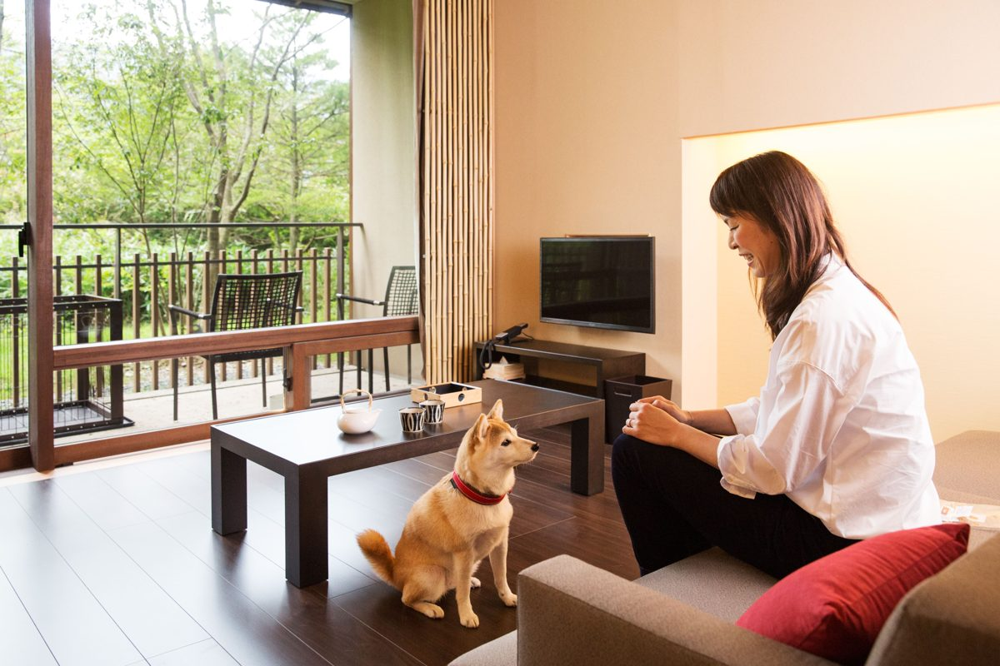
露天風呂付き愛犬ルーム「とちぎ民藝の間」。テラスの先は緑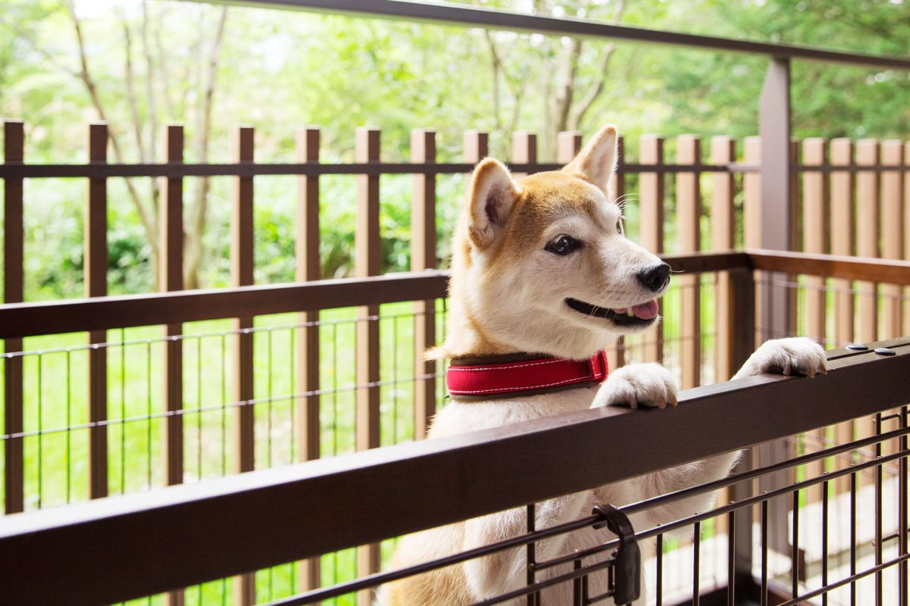
テラスは柵つき。外の緑を眺めながら湯涼みもできる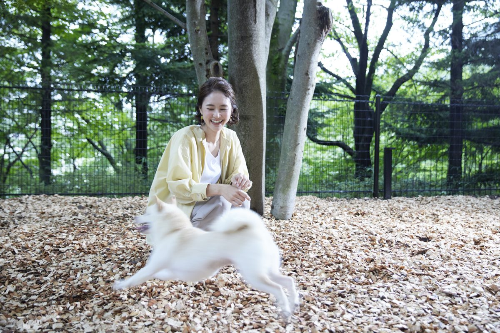
愛犬ルーム専用のドッグラン。木立の中のウッドチップ敷き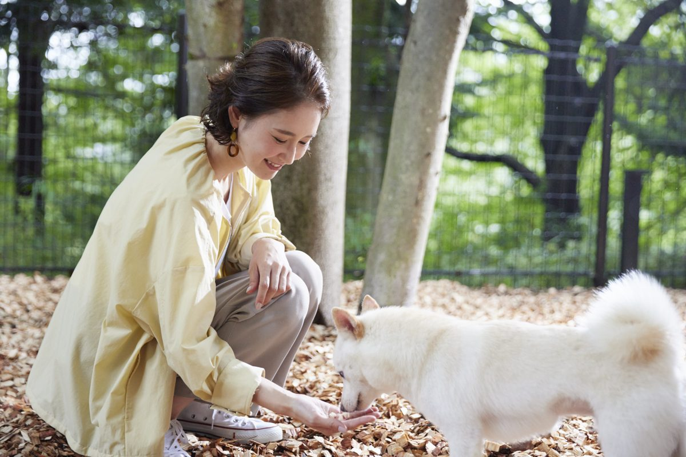
周りを気にせず遊べる、客室専用のドッグラン画像提供：界 鬼怒川 縮小・トリミングのみで掲載しています(施設の許諾。SNS・動画では使いません)。
鬼怒川の渓流に面した丘の上の温泉旅館。とちぎ民藝をしつらえた館内。
対象犬・頭数犬と泊まれるのは1室限定。中型犬(20kg以下)まで、1室2頭まで。
犬の宿泊料金星野リゾート共通規約では1頭1泊5,093円（税込）、現地精算。
ケージ・持参判断客室に愛犬用のケージ・食器あり。犬だけを残す時はケージへ。
夜はどこで寝る？犬と泊まれる客室(1室限定)。添い寝はベッド横の小上がりまで可(2026-10-23 施設回答)。
食事同伴食事処はソフトケージに入った状態で犬と一緒に食事可。犬の食事は持込のみ。
予約前の重要確認公式の施設情報に『ペット受け入れ可・1室限定・中型犬(20kg以下)1室2頭まで』とあるのみ。共通規約では狂犬病は毎年、5種以上混合は接種後3年未満（1年以内の抗体検査証明で代替可）、接種免除でも未接種は不可。ヒート中・終了後2週間以内・妊娠中は不可。浴室等でのシャンプー・トリミング不可。添い寝はベッド横の小上がりまで可(2026-10-23 施設回答)。
客室差：犬と泊まれるのは1室だけ。
主要駅から車で(目安・渋滞なし): 宇都宮駅 約42分・44.6km、郡山駅 約1時間43分・117.2km、水戸駅 約1時間46分・120.1km
この宿への旅行プラン →
公式情報確認日：2026-09-26、施設からの回答で確認：2026-10-23。※2026年10月時点の情報です。最新情報は公式サイトをご確認ください。料金・犬の条件・客室差は予約前に再確認。人用の寝具を犬が使えるかは、確認できていない場合は予約前確認としています。
ここへのわんこ旅行プラン
 画像提供：楽天トラベル
画像提供：楽天トラベルチェックイン 15:00〜18:00 ／ チェックアウト 10:00 (楽天トラベル掲載情報・2026-10-01 時点。プランにより異なる場合があります)
楽天トラベルのクチコミ評価★★★★☆3.85/ 5 ・ 3,017件
部屋 3.50・清潔感 3.56・サービス 3.92・風呂 3.91
最新のクチコミを読む(楽天トラベル・2026-11-01 投稿)
全室喫煙でタバコ臭が強く、子連れには不向き予約時、喫煙と表記のある部屋と、何も書いていない部屋があり、何も書いていない部屋を禁煙だと認識して予約したのですが、部屋に入ると強烈なタバコの臭い、机の上…
楽天トラベルに投稿された最新の 1 件を、そのまま表示しています(犬連れの方の投稿とは限りません)。
広告｜楽天トラベルでクチコミを読む 楽天トラベル API で取得(2026-11-04)。犬連れ以外の宿泊者も含む評価です。
対象犬・頭数小・中型犬（15kg未満）は1室2頭まで、大型犬（15kg以上30kg未満）は1頭まで。30kg以上は不可。犬付きプランには小・中型犬1頭分を含み、追加は2,200円（最大2頭）。
ケージはある？客室にケージ備え付け。犬だけで留守番する際は備え付けケージを使用。
夜はどこで寝る？犬可客室は和室10畳（2種）と和室7.5畳の3タイプ。7.5畳は小・中型犬のみ。
持ち込み判断温泉街の移動用バッグ・クレート、慣れた寝具を検討。年1回の狂犬病予防接種と有効期限内の伝染病予防接種または抗体検査が条件。
予約前の確認食事会場に犬は同伴不可。館内の同伴可能範囲と温泉利用中の留守番方法を確認。公式確認：2026-10-03
ワクチン接種済みが条件 主要駅から車で(目安・渋滞なし): 長野駅 約1時間04分・73.7km、高崎駅 約1時間30分・82.4km、松本駅 約1時間56分・137.5km
広告｜楽天トラベルで空室・条件を確認この宿への旅行プラン →
ここへのわんこ旅行プラン
 画像提供：楽天トラベル
画像提供：楽天トラベル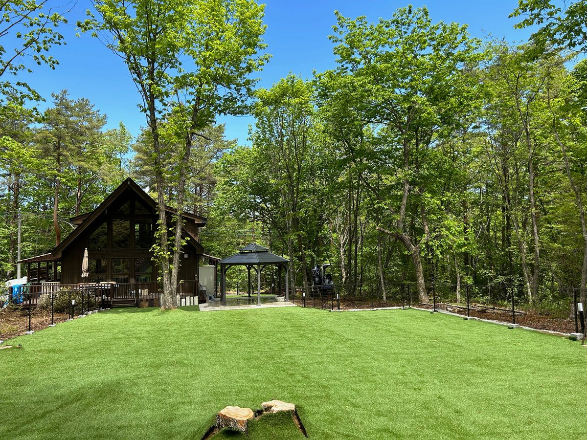
森に囲まれた芝生のドッグランとヴィラ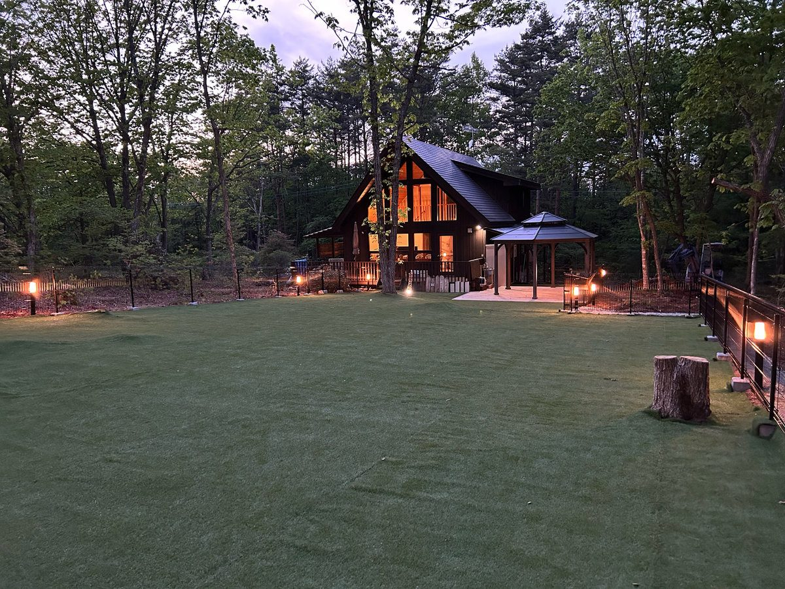
夕暮れのドッグラン。灯りがともる時間も気持ちいい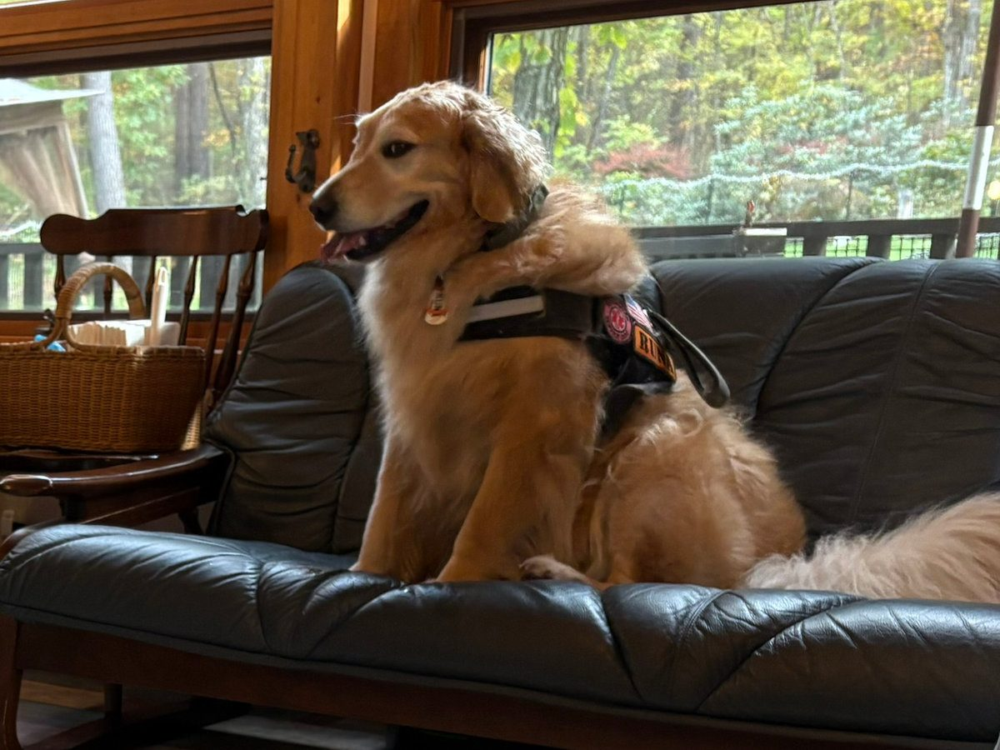
リビングのソファでくつろぐ(添い寝・家具利用の条件は予約前に確認)写真提供：Villa森のわんころりん 縮小のみで掲載しています。
チェックイン 09:00〜18:00 ／ チェックアウト 11:00 (楽天トラベル掲載情報・2026-10-01 時点。プランにより異なる場合があります)
浅間山北麓の森にあり、周囲に住宅やホテルがない静かな立地です。115坪の全面人工芝プライベートドッグランがあり、リビングから3秒でアクセスできます。また、ドッグラン内でBBQを楽しめる設備も備わっています。
対象犬・頭数小型犬から大人しい大型犬まで、最大6頭。4頭まで無料、5・6頭目は1頭2,000円追加。攻撃性の強い犬種は利用不可。
犬の宿泊料金4頭まで無料。5・6頭目は1頭2,000円追加（最大6頭）。
夜はどこで寝る？犬のフリースペースは1階・デッキ・ガゼボ・ドッグラン。飼い主と一緒でないと眠れない犬は2階で就寝可。階段の昇降に注意。
ドッグランあり。広さ115坪の全面人工芝プライベートドッグラン。リビングからウッドデッキ、BBQコーナーへとつながっており、1階全体がドッグラン状態です。
予約前の重要確認狂犬病（鑑札でも可）・混合ワクチン接種証明書を持参。犬だけを残す外出は禁止。ケージ貸出・持参、添い寝、食事同伴の条件は予約前確認。
ワクチン・狂犬病の証明書の提示・持参あり 主要駅から車で(目安・渋滞なし): 長野駅 約59分・54.2km、高崎駅 約1時間29分・68.7km、松本駅 約1時間52分・83.3km
広告｜楽天トラベルで空室・条件を確認この宿への旅行プラン →
公式情報確認日：2026-10-07。料金・犬の条件・客室差は予約前に再確認。人用の寝具を犬が使えるかは、確認できていない場合は予約前確認としています。
ここへのわんこ旅行プラン
山梨県北杜市
Rakuten STAY VILLA 八ヶ岳
 画像提供：楽天トラベル
画像提供：楽天トラベルチェックイン 15:00〜22:00 ／ チェックアウト 10:00 (楽天トラベル掲載情報・2026-10-01 時点。プランにより異なる場合があります)
楽天トラベルのクチコミ評価★★★★☆4.52/ 5 ・ 265件
部屋 4.66・清潔感 4.44・サービス 4.20・風呂 4.38
最新のクチコミを読む(楽天トラベル・2026-10-29 投稿)
設備が充実していて快適、わんこと一緒に大満足前から気になっていたrakuten stayさん!お部屋は綺麗でとても広くて、来たばかりのころは、あれトイレどこだったけ、、となるほど!笑キッチ…
楽天トラベルに投稿された最新の 1 件を、そのまま表示しています(犬連れの方の投稿とは限りません)。
広告｜楽天トラベルでクチコミを読む 楽天トラベル API で取得(2026-11-04)。犬連れ以外の宿泊者も含む評価です。
所在地 山梨県北杜市小淵沢町10144-3 · 公式情報
対象犬・頭数ペット対応棟で小・中・大型犬を合計2頭まで。
ケージはある？ペットフレンドリールームにケージあり。寸法・追加は確認。
夜はどこで寝る？人用ベッドと畳の小上がりは犬利用不可。普段の寝具は持参候補。
持ち込み判断普段の寝具・食事、寒暖差対策用品を持参候補に。
食事・一緒に過ごせる範囲ペット可は103・104・108・109。客室専用ドッグラン付きは104・109のみ（ペット可＝ラン付きではない）。
予約前の重要確認冬季の道路・気温、庭の積雪状況、ペット可の棟を予約前に確認。
公式情報で確認できた設備・特徴CHECK
- ドッグラン付き棟
- ペット対応ヴィラ
- 八ヶ岳観光拠点
- キッチン確認候補
- 駐車場確認
Rakuten STAY 共通案内：公式ペット特集のサイズ区分は小型犬10kg未満・中型犬25kg未満・大型犬40kg未満で、小・中・大型犬合計2頭まで。フード・おやつ・タオルなど必要な物は持参。犬料金の有無と人用寝具の扱いは共通FAQ・予約画面で確認してください。公式確認：2026-10-03
主要駅から車で(目安・渋滞なし): 甲府駅 約42分・40.0km、松本駅 約1時間04分・65.3km、静岡駅 約1時間54分・135.9km
広告｜楽天トラベルで空室・条件を確認この宿への旅行プラン →
公式情報確認日：2026-10-07
ここへのわんこ旅行プラン
山梨県北杜市
Tabist 清里グランデール 八ヶ岳
 画像提供：楽天トラベル
画像提供：楽天トラベルチェックイン 15:00〜24:00 ／ チェックアウト 10:00 (楽天トラベル掲載情報・2026-10-01 時点。プランにより異なる場合があります)
楽天トラベルのクチコミ評価★★★★☆4.33/ 5 ・ 63件
部屋 4.28・清潔感 4.39・サービス 4.50・風呂 4.12
最新のクチコミを読む(楽天トラベル・2026-10-21 投稿)
居心地の良い部屋と美味しい料理でリラックスシンプルなお部屋はとても居心地が良く、お料理もとても美味しかった。のんびり、伸び伸び過ごせことができました。クチコミの詳細はこちらから https:/…
楽天トラベルに投稿された最新の 1 件を、そのまま表示しています(犬連れの方の投稿とは限りません)。
広告｜楽天トラベルでクチコミを読む 楽天トラベル API で取得(2026-11-04)。犬連れ以外の宿泊者も含む評価です。
清里高原のペンション。犬と同じ部屋に泊まれ、食事もレストランへ犬を連れて行ける。グランピング・トレーラーハウスもある。
対象犬・頭数大型犬まで可(猫・小動物も可の案内)。トイレのしつけ済み・無駄吠えしないことが条件。頭数上限は予約前確認。
犬の宿泊料金1頭1泊2,200円の案内(ペンション)。グランピング等の料金は予約前確認。
ケージ・持参判断ペットフード・ケージ・犬の布団などは飼い主の判断で持参（備え付けケージの案内なし）。
夜はどこで寝る？客室。寝具の扱いは予約前確認。 人用ベッドを犬が使えるかは予約前に確認してください。
食事同伴食事の際もレストランに犬を同伴できる案内。
予約前の重要確認毎年の狂犬病と3年以内の予防注射または国家承認のコアワクチン抗体検査を推奨。接種できない場合は相談。証明提示の要否、頭数上限、冬季営業は予約前確認。
客室差：ペンション棟のほか、グランピング・トレーラーハウスがあり、条件が異なる可能性あり(予約前確認)。
主要駅から車で(目安・渋滞なし): 甲府駅 約39分・36.7km、松本駅 約1時間21分・82.5km、長野駅 約1時間47分・117.4km
広告｜楽天トラベルで空室・条件を確認この宿への旅行プラン →
公式情報確認日：2026-10-07。料金・犬の条件・客室差は予約前に再確認。人用の寝具を犬が使えるかは、確認できていない場合は予約前確認としています。
ここへのわんこ旅行プラン
長野県御代田町・馬瀬口
トレーラーハウスホテル・ジェニー
 画像提供：楽天トラベル
画像提供：楽天トラベルチェックイン 15:30〜20:00 ／ チェックアウト 11:00 (楽天トラベル掲載情報・2026-10-01 時点。プランにより異なる場合があります)
楽天トラベルのクチコミ評価★★★★☆4.46/ 5 ・ 85件
部屋 4.50・清潔感 4.48・サービス 4.57・風呂 4.05
最新のクチコミを読む(楽天トラベル・2026-10-25 投稿)
犬連れに優しく、愛犬も大喜びで走り回る犬連れにはとても優しい施設。普段走らないうちのワンコも走りまくっていた。クチコミの詳細はこちらから https://review.travel.rak…
楽天トラベルに投稿された最新の 1 件を、そのまま表示しています(犬連れの方の投稿とは限りません)。
広告｜楽天トラベルでクチコミを読む 楽天トラベル API で取得(2026-11-04)。犬連れ以外の宿泊者も含む評価です。
軽井沢・御代田の森にある、全室独立型のトレーラーハウスの宿。フェンスで囲まれた全面天然芝のドッグラン(エリア最大級)は、宿泊客は滞在中ずっと使える。森のカフェとBBQハウスもある。
対象犬・頭数小型犬から大型犬まで。大型犬(25kg以上)は宿泊定員の1/2頭、小・中型犬は定員の1.5倍まで。グランピングテントは小型犬3頭／中・大型犬1頭まで。狂犬病予防接種と混合ワクチンを1年以内に受けていること。
犬の宿泊料金1頭目2,200円、2頭目以降1,650円／頭／日。
ケージ・持参判断トイレ、トイレシート2枚、防水シーツ、足拭きタオル、食器、汚物入れバケツを用意。ケージの有無は予約前確認。
夜はどこで寝る？「ペットと一緒にベッドでお休みいただけます」（防水シーツの用意あり）。
食事同伴カフェテラスは犬同伴可（1年以内の狂犬病接種が条件）。BBQハウス等への同伴は予約前確認。
ドッグランあり(フェンス付き・全面芝。小型犬〜大型犬OK。宿泊客・カフェ利用者は無料で滞在中いつでも、日帰り利用は日中。ヒート中は出血開始から約1か月利用不可)
予約前の重要確認サイズ混在時の頭数計算は要確認。ドッグラン内への食べ物・おやつの持ち込みは不可、ドッグラン以外ではリード着用。
犬用備品・設備CHECK
- トイレ、トイレシート(2枚)、防水シーツ、足拭きタオル、食器、汚物入れバケツ
客室差：トレーラーハウス(スイート ソラ)のほか、一軒家タイプの別荘アストラ、グランピング(ドス・ドーム・ウノ)、RVパークがあり、犬の頭数条件が異なる。
ワクチン接種済みが条件 主要駅から車で(目安・渋滞なし): 長野駅 約1時間10分・66.1km、高崎駅 約1時間13分・73.3km、松本駅 約1時間33分・67.3km
広告｜楽天トラベルで空室・条件を確認この宿への旅行プラン →
公式情報確認日：2026-09-27。料金・犬の条件・客室差は予約前に再確認。人用の寝具を犬が使えるかは、確認できていない場合は予約前確認としています。
ここへのわんこ旅行プラン
 画像提供：楽天トラベル
画像提供：楽天トラベル楽天トラベルのクチコミ評価★★★★☆4.29/ 5 ・ 41件
清潔感 4.14
広告｜楽天トラベルでクチコミを読む 楽天トラベル API で取得(2026-11-04)。犬連れ以外の宿泊者も含む評価です。
小谷村の宿で、公式サイトに犬連れ宿泊の条件（コテージは50kgを超える超大型犬も可）が載っています。
対象犬・頭数コテージは50kgを超える超大型犬も可。頭数は予約前確認。
予約前の重要確認頭数、犬の料金、ケージ、添い寝、食事の場への同伴、ドッグランは公式で確認できておらず予約前確認。
主要駅から車で(目安・渋滞なし): 長野駅 約47分・56.7km、松本駅 約1時間12分・73.5km、甲府駅 約2時間38分・166.7km
広告｜楽天トラベルで空室・条件を確認この宿への旅行プラン →
公式情報確認日：2026-10-03。料金・犬の条件・客室差は予約前に再確認。人用の寝具を犬が使えるかは、確認できていない場合は予約前確認としています。
ここへのわんこ旅行プラン
新潟県湯沢町
NASPAニューオータニ ペットフレンドリールーム
 画像提供：楽天トラベル
画像提供：楽天トラベル楽天トラベルのクチコミ評価★★★★☆4.42/ 5 ・ 2,242件
部屋 4.45・清潔感 4.46・サービス 4.44・風呂 4.36
最新のクチコミを読む(楽天トラベル・2026-10-30 投稿)
高台からの絶景と丁寧なフロント対応に満足初めて利用させてもらいました。高台からのロケーションは素晴らしいかったです。フロント対応も落ち着いた丁寧な説明でとても感じが良かったですね。今回…
楽天トラベルに投稿された最新の 1 件を、そのまま表示しています(犬連れの方の投稿とは限りません)。
広告｜楽天トラベルでクチコミを読む 楽天トラベル API で取得(2026-11-04)。犬連れ以外の宿泊者も含む評価です。
越後湯沢のリゾートホテル。犬と泊まれる客室と専用ドッグランがある。
所在地 新潟県南魚沼郡湯沢町湯沢2117-9 · 公式情報
対象犬・頭数15kg以下の小型・中型犬。スーペリアツインは1頭、ジュニアスイートは2頭まで。
ケージ・持参判断客室にケージあり。 客室外の移動は体全体が入る持参キャリー必須。
夜はどこで寝る？客室のケージ。「客室の備付のベッドでは寝かせないこと」（同意書）。犬だけを残す時・就寝時は「できる限り」ケージへ。
食事同伴レストラン・ラウンジ・バー・大浴場など客室以外の施設へは同伴不可。
ドッグラン専用ドッグラン MINI DOG GARDEN(8:00〜18:00、スキーシーズンと積雪時は利用不可)。
予約前の重要確認同意書と予防接種証明のコピーを宿泊前日までにメールまたはFAXで提出。客室内ではマナーパンツ着用。生後4か月以上。犬料金は予約前確認。
犬用備品・設備CHECK
- ケージ、トイレシート8枚、ウェットティッシュ、ボディタオル
客室差：スーペリアツイン(8・9階)とジュニアスイート(8階)。
ワクチン・狂犬病の証明書の提示・持参あり 主要駅から車で(目安・渋滞なし): 高崎駅 約1時間25分・85.9km、長野駅 約1時間29分・100.1km、新潟駅 約1時間46分・132.6km
広告｜楽天トラベルで空室・条件を確認この宿への旅行プラン →
公式情報確認日：2026-10-03。料金・犬の条件・客室差は予約前に再確認。人用の寝具を犬が使えるかは、確認できていない場合は予約前確認としています。
ここへのわんこ旅行プラン
 画像提供：楽天トラベル
画像提供：楽天トラベル楽天トラベルのクチコミ評価★★★★☆4.10/ 5 ・ 1,782件
部屋 4.14・清潔感 4.11・サービス 4.07・風呂 4.04
最新のクチコミを読む(楽天トラベル・2026-10-28 投稿)
ビュッフェが美味しく、また利用したいペットと利用しました。雨で散歩が出来ず残念でしたが、朝夕のビュッフェは品数豊富で、とても美味しくいただきました。また利用したい宿です。クチコミの詳細はこちら…
楽天トラベルに投稿された最新の 1 件を、そのまま表示しています(犬連れの方の投稿とは限りません)。
広告｜楽天トラベルでクチコミを読む 楽天トラベル API で取得(2026-11-04)。犬連れ以外の宿泊者も含む評価です。
妙高山を望む高原リゾートホテル。犬と泊まれる専用客室のほか、中型犬まで泊まれるコテージ、屋内・屋外のドッグランがある。
所在地 新潟県妙高市桶海1090 · 公式情報
対象犬・頭数生後4か月以上・体重23kg以下。小型犬は1室2頭まで、中型犬は1頭まで。2頭または中型犬のときは事前に連絡。
犬の宿泊料金小型犬1頭は宿泊料金に含まれる案内。小型犬2頭目・中型犬は追加2,000円の案内。最新額は予約前確認。
夜はどこで寝る？犬同伴専用の客室(本館1階)。寝具の扱いは予約前確認。 人用ベッドを犬が使えるかはペット同伴の利用規約で予約前に確認してください。
食事同伴館内で犬が入れるのは犬同伴の専用客室だけの案内(レストランは同伴不可)。食事中の犬の扱いは予約前確認。
ドッグラン屋内ドッグラン(約200㎡、宿泊者は無料)と宿泊者専用の屋外ドッグラン(約160㎡、季節で利用時間が変わる)。
予約前の重要確認宿泊時にペット同伴の利用規約への同意・署名が必要。ワクチン証明の要否と冬季のドッグラン営業は予約前に確認。
犬用備品・設備CHECK
- ドッグサークル、フードボウル、トイレシート・トレイ、ゴミ箱、粘着クリーナー、ウェットシート
客室差：本館のステイウィズドッグ ツイン(4室)・トリプル(1室)と、コンテナを使ったコテージルーム。
主要駅から車で(目安・渋滞なし): 長野駅 約44分・40.7km、松本駅 約1時間51分・109.5km、新潟駅 約2時間05分・153.5km
広告｜楽天トラベルで空室・条件を確認この宿への旅行プラン →
公式情報確認日：2026-09-26。料金・犬の条件・客室差は予約前に再確認。人用の寝具を犬が使えるかは、確認できていない場合は予約前確認としています。
ここへのわんこ旅行プラン
静岡県伊豆市・天城湯ヶ島
UFUFU VILLAGE(天城湯ヶ島・ペット同伴ドームテント)
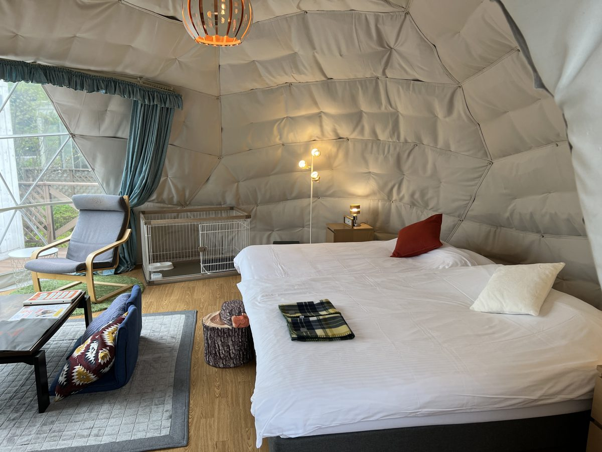
ペット同伴ドームテントの室内。愛犬と一緒に過ごせる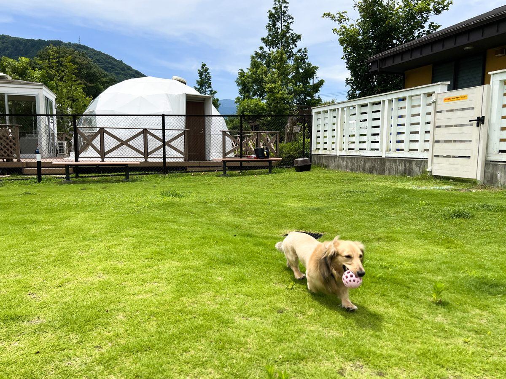
天然芝のドッグラン(勾配のあるエリアあり)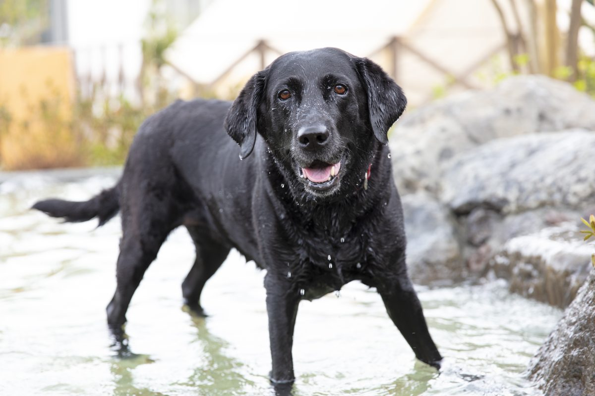
水遊び場。夏は犬も涼める写真提供：UFUFU VILLAGE(株式会社Resort&Spa雲風々) 写真は運営会社の許諾を得て掲載(2026-10-12 許諾、10-15 受領)
チェックイン 15:00〜18:00 ／ チェックアウト 10:00 (楽天トラベル掲載情報・2026-10-01 時点。プランにより異なる場合があります)
楽天トラベルのクチコミ評価★★★★☆4.30/ 5 ・ 140件
部屋 4.32・清潔感 4.17・サービス 4.36・風呂 4.30
最新のクチコミを読む(楽天トラベル・2026-10-11 投稿)
バーベキューも朝食も大満足、量も十分バーベキューも朝食も大満足。朝食はむしろ食べ切れない量でした。お風呂も良く、設備も充実していてまた行きます!クチコミの詳細はこちらから https://re…
楽天トラベルに投稿された最新の 1 件を、そのまま表示しています(犬連れの方の投稿とは限りません)。
広告｜楽天トラベルでクチコミを読む 楽天トラベル API で取得(2026-11-04)。犬連れ以外の宿泊者も含む評価です。
BBQ夕食とアルコール込みのフリードリンクが宿泊料金に含まれるオールインクルーシブのグランピング。シモンズ製ダブルベッド2台。天然芝の広いドッグラン、犬と一緒に遊べる水遊び場、各部屋とドッグラン横にリードフック。フードボウル・水入れ・トイレトレー・ペットシート・ペット用ゴミ箱を用意。貸切風呂(有料)や大浴場、露天風呂・半露天のタイプも。
対象犬・頭数ペット同伴タイプのドームテント(type WP・3棟・28㎡・定員4名)。用意のケージは小型犬2頭または大型犬1頭まで(幅119×奥行79×高さ71cm、天井なし。乗り越える恐れや複数頭の場合は持参)。施設内はリードを必ず付ける。ペット同伴宿泊規約書に同意。
犬の宿泊料金大きさにより施設使用料が異なる(金額は予約時に確認・施設回答 2026-10-12)
ケージ・持参判断用意あり(小型2頭/大型1頭まで) 複数頭や乗り越える犬は持参
夜はどこで寝る？テント内(添い寝可・ケージも用意)
予約前の重要確認犬の体格別の施設使用料・ワクチン証明は規約書で確認。
犬用備品・設備CHECK
- ケージ、フードボウル、水入れ、トイレトレー、ペットシート、ペット用ゴミ箱、リードフック
客室差：ペット同伴はtype WPの3棟のみ。トイレ・シャワーは共用。
主要駅から車で(目安・渋滞なし): 静岡駅 約1時間28分・85.4km、甲府駅 約1時間49分・121.5km、横浜駅 約2時間07分・133.7km
広告｜楽天トラベルで空室・条件を確認この宿への旅行プラン →
公式情報確認日：2026-09-27、施設回答 2026-10-12。料金・犬の条件・客室差は予約前に再確認。人用の寝具を犬が使えるかは、確認できていない場合は予約前確認としています。
ここへのわんこ旅行プラン
静岡県沼津市・戸田(西伊豆)
西伊豆グランピング 天空テラス(ペット同伴和洋室)
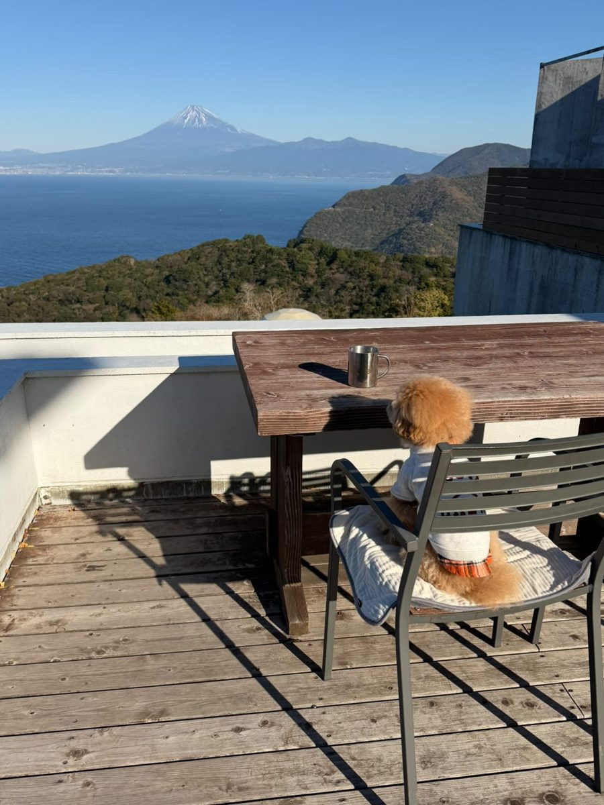
テラスから駿河湾越しの富士山。愛犬との写真撮影に好評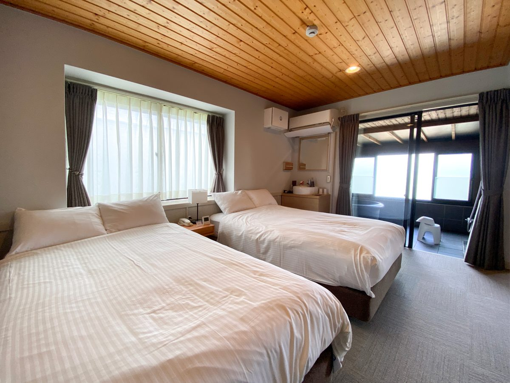
ペット同伴可のドームテント。夜は客室内で添い寝可(ケージも用意) ペット同伴和洋室(半露天風呂付き)
ペット同伴和洋室(半露天風呂付き)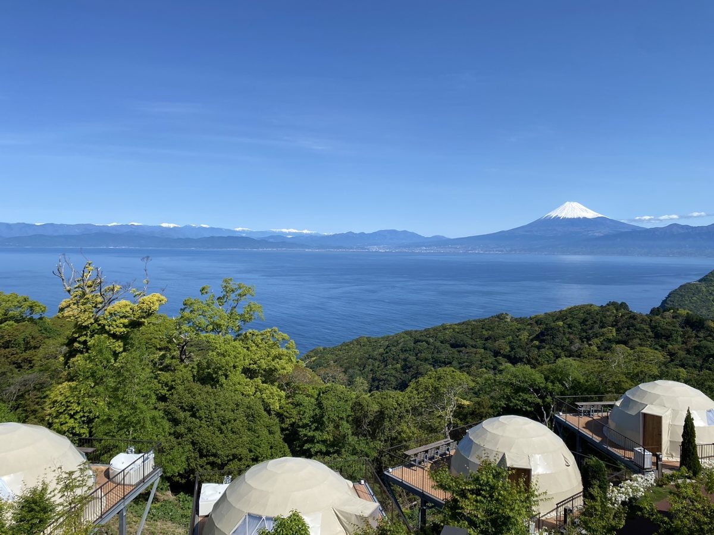
高台のドームテント群と駿河湾、遠くに富士山写真提供：天空テラス(株式会社Resort&Spa雲風々) 写真は運営会社の許諾を得て掲載(2026-10-12 許諾、10-16 差し替え)
楽天トラベルのクチコミ評価★★★★☆4.24/ 5 ・ 259件
部屋 4.30・清潔感 4.31・サービス 4.36・風呂 4.11
最新のクチコミを読む(楽天トラベル・2026-10-26 投稿)
景色と食事に大満足テントや展望風呂は経年劣化がみられますが、部屋の中や共用のトイレ、シャワー室はとてもきれいで使いやすかったです。スタッフのかたもとても親切で助けられました。食事スペースの壁が薄く…
楽天トラベルに投稿された最新の 1 件を、そのまま表示しています(犬連れの方の投稿とは限りません)。
広告｜楽天トラベルでクチコミを読む 楽天トラベル API で取得(2026-11-04)。犬連れ以外の宿泊者も含む評価です。
駿河湾越しの富士山を望む高台のグランピング＆ホテル。カウンター付きテラスの『天空バス』(湯浴み着あり)。ペットフードボウル・ペットシート・ケージ・ペット用トイレ・うんちBOXを用意。汚損はクリーニング代。
対象犬・頭数ホテル棟の『ペット同伴和洋室(半露天風呂付き)』1室と、ペット同伴可のドームテント2室(各定員4名)。大型犬可、多頭は条件付き。ケージは和洋室が中型犬1頭まで、ドームテントが小型犬2頭・大型犬1頭まで(複数頭は持参)。場内はリード。立ち寄れない場所はフロント・レストラン・風呂・シャワー・トイレ。汚物は和洋室は玄関の汚物入れ、ドームテントはデッキシンク下の汚物入れへ。ペット同伴宿泊規約書に同意。
犬の宿泊料金1頭 3,300円(税込・大きさ問わず一律の施設使用料。1泊ごとかは予約時に確認/施設回答 2026-10-13)
ケージ・持参判断用意あり(和洋室 中型1頭/ドーム 小型2頭・大型1頭まで) 複数頭は持参
夜はどこで寝る？客室内(添い寝可・ケージも用意/施設回答 2026-10-13)
食事同伴ドームテント泊は可、半露天風呂付き和洋室泊は不可(施設回答 2026-10-12)
予約前の重要確認多頭の条件・犬料金が1泊ごとか・ワクチン証明は規約書と予約時に確認。
犬用備品・設備CHECK
- フードボウル、ペットシート、ケージ、ペット用トイレ、うんちBOX、リードフック(場内)
客室差：ペット同伴和洋室(半露天風呂付き)1室、ペット同伴可ドームテント2室(各定員4名)。食事同伴はドームテントのみ。
主要駅から車で(目安・渋滞なし): 静岡駅 約1時間38分・94.2km、甲府駅 約2時間03分・135.4km、横浜駅 約2時間21分・147.7km
広告｜楽天トラベルで空室・条件を確認この宿への旅行プラン →
公式情報確認日：2026-09-27、施設回答 2026-10-12・10-13。料金・犬の条件・客室差は予約前に再確認。人用の寝具を犬が使えるかは、確認できていない場合は予約前確認としています。
ここへのわんこ旅行プラン
 画像提供：楽天トラベル
画像提供：楽天トラベル楽天トラベルのクチコミ評価★★★★★4.80/ 5 ・ 108件
清潔感 4.70
広告｜楽天トラベルでクチコミを読む 楽天トラベル API で取得(2026-11-04)。犬連れ以外の宿泊者も含む評価です。
裏磐梯の犬と泊まれる宿。小型犬専用の人工芝ドッグランがある。
所在地 福島県耶麻郡北塩原村桧原字蛇平原山1074-186 · 公式アクセス
対象犬・頭数小型犬のみ、2頭まで(1人で2頭以上連れる場合は事前に電話)。狂犬病予防接種と5種以上のワクチン接種が必要。
犬の宿泊料金小型犬 1頭3,300円(税込)の案内。
夜はどこで寝る？客室。 人用の寝具を犬が使えるかは予約前に確認してください。
食事同伴ダイニングに犬用ボックス・リードフックがあり、犬同伴で食事可。
ドッグラン小型犬専用の人工芝ドッグラン（冬季は使用不可。宿は冬季も営業）。
予約前の重要確認ヒート中の犬は入館不可。安全面に支障があると判断した場合は同伴を断る場合ありの案内。冬季も営業。
ワクチン接種済みが条件 主要駅から車で(目安・渋滞なし): 郡山駅 約47分・53.6km、福島駅 約48分・54.7km、山形駅 約1時間23分・94.4km
広告｜楽天トラベルで空室・条件を確認この宿への旅行プラン →
公式情報確認日：2026-10-03。料金・犬の条件・客室差は予約前に再確認。人用の寝具を犬が使えるかは、確認できていない場合は予約前確認としています。
ここへのわんこ旅行プラン
 画像提供：楽天トラベル
画像提供：楽天トラベルチェックイン 15:00〜18:00 ／ チェックアウト 10:00 (楽天トラベル掲載情報・2026-10-01 時点。プランにより異なる場合があります)
楽天トラベルのクチコミ評価★★★★☆4.47/ 5 ・ 2,701件
部屋 4.43・清潔感 4.35・サービス 4.39・風呂 4.52
最新のクチコミを読む(楽天トラベル・2026-10-26 投稿)
お肉は絶品、ワンちゃんメニューは種類希望お肉が美味しかった。ワンちゃんメニューがもう少し種類があるとなおよかった。クチコミの詳細はこちらから https://review.travel.rak…
楽天トラベルに投稿された最新の 1 件を、そのまま表示しています(犬連れの方の投稿とは限りません)。
広告｜楽天トラベルでクチコミを読む 楽天トラベル API で取得(2026-11-04)。犬連れ以外の宿泊者も含む評価です。
白河高原の森にコテージ・ログ・グランピングなどが並ぶ大型リゾート。ドッグランと犬用温泉がある。
所在地 福島県岩瀬郡天栄村大字羽鳥字高戸屋39番地 · 公式情報
対象犬・頭数全客室で犬と泊まれる案内。室内犬であればサイズ・犬種の制限なし(体高50cm以上を大型犬として案内)。頭数の上限は予約前確認。
ケージ・持参判断サークル1台（追加不可）、飛び出し防止ゲート、トイレ、トイレシート6枚、専用タオル、食器、清掃用品、散歩用袋などを用意。
夜はどこで寝る？「ベッド・ソファにはワンちゃんを乗せない、又は入れないでください」（約款別紙3）。犬だけを残す場合はサークル等へ。
食事同伴レストラン「ラ・ピーナ」は全席犬同伴可。朝夕のバイキングも同伴可で、犬用メニューコーナーあり。
予約前の重要確認1年以内の狂犬病・伝染病予防接種、または抗体検査で抗体が残っている室内犬が条件（証明書の提出方法は約款に記載なし）。ヒート中・終了後2週間以内は不可。犬の宿泊料金・頭数上限と犬用温泉の料金は公式本文で確認できず、予約前に確認。
犬用備品・設備CHECK
- サークル(1台)、飛び出し防止ゲート、トイレ、トイレシート(6枚)、専用バスタオル・足拭きタオル、専用食器、フローリングワイパー、コロコロ、除菌消臭スプレー、散歩用袋、愛犬用ゴミ箱
客室差：コテージ・ログ・貸別荘・グランピングなど棟タイプが多く、定員や広さ・設備が異なる。
ワクチン接種済みが条件 主要駅から車で(目安・渋滞なし): 郡山駅 約42分・50.0km、福島駅 約1時間16分・91.0km、宇都宮駅 約1時間38分・104.1km
広告｜楽天トラベルで空室・条件を確認この宿への旅行プラン →
公式情報確認日：2026-10-03。料金・犬の条件・客室差は予約前に再確認。人用の寝具を犬が使えるかは、確認できていない場合は予約前確認としています。
ここへのわんこ旅行プラン
宮城県松島町
松島温泉 松島センチュリーホテル ワンだぁルーム
 画像提供：楽天トラベル
画像提供：楽天トラベルチェックイン 15:00〜19:00 ／ チェックアウト 11:00 (楽天トラベル掲載情報・2026-10-01 時点。プランにより異なる場合があります)
楽天トラベルのクチコミ評価★★★★☆4.43/ 5 ・ 2,011件
部屋 4.37・清潔感 4.40・サービス 4.45・風呂 4.46
最新のクチコミを読む(楽天トラベル・2026-10-26 投稿)
松島湾の眺めと親切なスタッフに感謝青空ではありませんでしたが、部屋からの松島湾の眺めはよかった!スタッフの方々が、それぞれ親切で一泊とはいえ、高齢の母といい思い出になりました。久しぶりの松島で…
楽天トラベルに投稿された最新の 1 件を、そのまま表示しています(犬連れの方の投稿とは限りません)。
広告｜楽天トラベルでクチコミを読む 楽天トラベル API で取得(2026-11-04)。犬連れ以外の宿泊者も含む評価です。
松島湾に面したホテル。犬と泊まれるのは1階の専用フロアの『ワンだぁルーム』で、徒歩2分で福浦橋へ散歩できる。
所在地 宮城県宮城郡松島町松島字仙随8 · 公式アクセス
対象犬・頭数1歳以上の室内飼育小型犬、1室2頭・合計10kgまで。狂犬病・5種以上混合の接種後2週間以上1年未満の証明書を提示。獣医師等による接種免除の場合は証明書なしでも可、免除証明書等はあれば提示。ノミ・マダニ・寄生虫対策、畜犬登録が必要。
犬の宿泊料金1部屋5,500円(税込)/泊(2頭でも同額)
ケージ・持参判断備え付けサークルあり 館内の移動用にキャリーケースを持参
夜はどこで寝る？ワンだぁルーム(4名定員・3名定員約39㎡、1階の専用フロア) 寝具・ソファーの上に犬を乗せない規約。
食事同伴人の食事はレストランで犬は同席不可。犬のごはんは持参して部屋で
予約前の重要確認犬が入れるのは客室から玄関までで、ケージかリードを付けて抱っこで移動(館内は歩かせない)。預かり・犬だけの留守番は不可。
犬用備品・設備CHECK
- 備え付けサークル、食事用お皿2個、トイレトレー(ペットシート付)、ウェットティッシュ、消臭スプレー、粘着クリーナー、汚物入れ、足拭きタオル、冷凍庫
客室差：4名定員と3名定員(約39㎡)の2タイプ。
ワクチン・狂犬病の証明書の提示・持参あり 主要駅から車で(目安・渋滞なし): 仙台駅 約30分・28.1km、山形駅 約1時間17分・89.2km、福島駅 約1時間35分・107.2km
広告｜楽天トラベルで空室・条件を確認この宿への旅行プラン →
公式情報確認日：2026-10-07。料金・犬の条件・客室差は予約前に再確認。人用の寝具を犬が使えるかは、確認できていない場合は予約前確認としています。
ここへのわんこ旅行プラン
宮城県加美町・宮崎
たびのCAMPING BASE 加美ゆーらんど コテージB(ペット同伴可)
 画像提供：楽天トラベル
画像提供：楽天トラベルチェックイン 15:00〜18:00 ／ チェックアウト 10:00 (楽天トラベル掲載情報・2026-10-01 時点。プランにより異なる場合があります)
楽天トラベルのクチコミ評価★★★★☆4.50/ 5 ・ 22件
清潔感 4.50
広告｜楽天トラベルでクチコミを読む 楽天トラベル API で取得(2026-11-04)。犬連れ以外の宿泊者も含む評価です。
温泉施設『加美ゆーらんど』を無料で利用できる一棟貸しコテージ。コテージB(洋室×2、定員4名)はドッグラン付きで無料で使える。熊対策として夕方に獣除けの花火を実施。
対象犬・頭数ペット同伴はコテージBのみ(1棟につき3頭、合計30kgまで)。混合ワクチンの接種証明書を当日提示。フロント(受付)へのペットの入室は不可(車内などで待機)。
予約前の重要確認犬の料金・ケージの有無は公式ページで確認できず予約前確認。冬季(11月下旬〜4月中旬)は休業。ルール違反は3万円の請求と即時退去。
客室差：コテージBのみペット可(コテージAは不可)。コテージ内の浴室は温泉ではない。
ワクチン・狂犬病の証明書の提示・持参あり 主要駅から車で(目安・渋滞なし): 仙台駅 約1時間03分・57.5km、山形駅 約1時間12分・84.0km、福島駅 約2時間03分・134.3km
広告｜楽天トラベルで空室・条件を確認この宿への旅行プラン →
公式情報確認日：2026-09-27。料金・犬の条件・客室差は予約前に再確認。人用の寝具を犬が使えるかは、確認できていない場合は予約前確認としています。
ここへのわんこ旅行プラン
山形県山形市・蔵王温泉
蔵王つららぎの宿 花ゆらん(ログハウス)
 画像提供：楽天トラベル
画像提供：楽天トラベルチェックイン 15:00〜17:30 ／ チェックアウト 10:00 (楽天トラベル掲載情報・2026-10-01 時点。プランにより異なる場合があります)
楽天トラベルのクチコミ評価★★★★☆4.07/ 5 ・ 113件
部屋 4.07・清潔感 4.17・サービス 4.10・風呂 4.17
最新のクチコミを読む(楽天トラベル・2026-10-12 投稿)
大変良かったです温泉食事も良かったですよ。クチコミの詳細はこちらから https://review.travel.rakuten.co.jp/hotel/voice/149097?revi…
楽天トラベルに投稿された最新の 1 件を、そのまま表示しています(犬連れの方の投稿とは限りません)。
広告｜楽天トラベルでクチコミを読む 楽天トラベル API で取得(2026-11-04)。犬連れ以外の宿泊者も含む評価です。
蔵王温泉のログハウスで大型犬とも泊まれる。本館の食事処で犬と食事可。
所在地 山形県山形市蔵王温泉878-12 · 公式情報
ケージ・持参判断予約前確認 本館へ移動するときは抱っこかケージ。ケージは持参が安心。
夜はどこで寝る？予約前確認 人用ベッドを犬が使えるかは予約前に確認してください。
予約前の重要確認狂犬病・混合ワクチン接種済みでトイレのしつけができている犬に限る。超大型犬とよく吠える犬は食事中ログハウスで留守番の案内。
客室差：ログハウスは2棟。2棟目は2階が寝室。
ワクチン接種済みが条件 主要駅から車で(目安・渋滞なし): 山形駅 約20分・18.9km、仙台駅 約1時間05分・74.4km、福島駅 約1時間13分・91.7km
広告｜楽天トラベルで空室・条件を確認この宿への旅行プラン →
公式情報確認日：2026-09-24。料金・犬の条件・客室差は予約前に再確認。人用の寝具を犬が使えるかは、確認できていない場合は予約前確認としています。
ここへのわんこ旅行プラン
山形県米沢市・小野川温泉
小野川温泉 吾妻荘 別館 吾妻園
 画像提供：楽天トラベル
画像提供：楽天トラベルチェックイン 15:00〜18:00 ／ チェックアウト 10:00 (楽天トラベル掲載情報・2026-10-01 時点。プランにより異なる場合があります)
楽天トラベルのクチコミ評価★★★★☆4.46/ 5 ・ 657件
部屋 4.31・清潔感 4.36・サービス 4.52・風呂 4.52
最新のクチコミを読む(楽天トラベル・2026-10-19 投稿)
のんびりできます好きすぎて何回か泊っています。ペット宿泊用の棟は 全室温泉付きです。料理も部屋出しですし 犬を連れていても全くストレスなくのんびりできます。お料理は 地元の素材をいかして 手が込ん…
楽天トラベルに投稿された最新の 1 件を、そのまま表示しています(犬連れの方の投稿とは限りません)。
広告｜楽天トラベルでクチコミを読む 楽天トラベル API で取得(2026-11-04)。犬連れ以外の宿泊者も含む評価です。
小野川温泉・吾妻荘の別館。道を挟んで本館から20mほどの、全5室が内風呂付きのペット同伴専用の宿。
所在地 山形県米沢市小野川町2471 · 公式情報
対象犬・頭数小型犬・中型犬・大型犬(猫なども)。しつけ・ワクチン接種済みで、無駄吠えしないこと。発情中は不可。
ケージ・持参判断なし(ペット用の設備はない案内) ケージ(リード)・フード・食器・トイレシーツ・マットや毛布を持参
夜はどこで寝る？同室(別館 吾妻園の客室) 布団への粗相などの苦情が多いとの注意書きあり。犬を布団に乗せてよいかは予約前に確認してください。
食事同伴夕食は部屋出し、またはペット同伴できる個室会場
予約前の重要確認ペットが物を壊したり汚したりした場合は別料金の案内。
客室差：犬と泊まれるのは別館 吾妻園(全5室、内風呂付き。シャワーはなく本館の大浴場も使える)。
ワクチン接種済みが条件 主要駅から車で(目安・渋滞なし): 山形駅 約45分・55.6km、福島駅 約45分・50.5km、郡山駅 約1時間13分・91.5km
広告｜楽天トラベルで空室・条件を確認この宿への旅行プラン →
公式情報確認日：2026-09-26。料金・犬の条件・客室差は予約前に再確認。人用の寝具を犬が使えるかは、確認できていない場合は予約前確認としています。
ここへのわんこ旅行プラン
広告｜楽天トラベル
広告｜別の地域の宿も見る
現在の検索条件とは別の宿です。上の検索結果には含まれていません。
Dogサバトリーのある宿 ご・遊庭（千葉県鴨川市）
楽天トラベル掲載ページで、空室、料金、対象プラン、犬の宿泊条件を確認できます。条件は日程・客室・プランで変わるため、予約確定前に必ず最新表示を確認してください。
このリンク経由で予約が成立すると、運営者が紹介料を受け取る場合があります。施設評価や掲載順位への影響はありません。